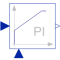

LimitedPILimited PI-controller with anti-windup and feed-forward |

|
Diagram
{kind=link}
Information
This information is part of the Modelica Standard Library maintained by the Modelica Association.
Proportional - Integral - controller with optional feed-forward and limitation at the output.
The integral part can be switched off to obtain a limited P-controller.
The feed-forward gain can either be constant or given by the optional input kFF.
When the output is limited, the controller cannot bring the control error to zero and the integrator will not stop integrating. To avoid this WindUp - effect, an Anti-WindUp loop is implemented: The difference between unlimited and limited output is fed back to the integrator's input.
Parameters (13)
| k |
Value: 1 Type: Real Description: Gain |
|---|---|
| useI |
Value: true Type: Boolean Description: PI else P |
| Ti |
Value: 1 Type: Time (s) Description: Integral time constant (T>0 required) |
| useFF |
Value: false Type: Boolean Description: Use feed-forward? |
| useConstantKFF |
Value: true Type: Boolean Description: Use constant feed-forward factor? |
| KFF |
Value: 1 Type: Real Description: Feed-forward gain |
| constantLimits |
Value: true Type: Boolean Description: Use constant limits? |
| symmetricLimits |
Value: true Type: Boolean Description: Use symmetric limits? |
| yMax |
Value: inf Type: Real Description: Upper limit of output |
| yMin |
Value: -yMax Type: Real Description: Lower limit of output |
| initType |
Value: Modelica.Blocks.Types.Init.NoInit Type: Init Description: Type of initialization (1: no init, 2: steady state, 3: initial state, 4: initial output) |
| x_start |
Value: 0 Type: Real Description: Initial or guess value of state |
| y_start |
Value: 0 Type: Real Description: Initial value of output |
Outputs (1)
| controlError |
Default Value: u - u_m Type: Real Description: Control error (set point - measurement) |
|---|
Connectors (7)
| u |
Type: RealInput Description: Connector of Real input signal |
|
|---|---|---|
| y |
Type: RealOutput Description: Connector of Real output signal |
|
| u_m |
Type: RealInput Description: Connector of measured signal |
|
| feedForward |
Type: RealInput Description: Connector of feed-forward signal |
|
| kFF |
Type: RealInput Description: Connector of feed-forward factor |
|
| yMaxVar |
Type: RealInput Description: Connector of yMax input signal |
|
| yMinVar |
Type: RealInput Description: Connector of yMin input signal |
Components (13)
| feedback |
Type: Feedback |
|
|---|---|---|
| addAntiWindup |
Type: Add |
|
| integrator |
Type: Integrator |
|
| add3 |
Type: Add3 |
|
| variableLimiter |
Type: VariableLimiter |
|
| addSat |
Type: Feedback |
|
| product |
Type: Product |
|
| zeroI |
Type: Constant |
|
| zeroFF |
Type: Constant |
|
| constantKFF |
Type: Constant |
|
| yMaxConst |
Type: Constant |
|
| yMinConst |
Type: Constant |
|
| gain |
Type: Gain |
Used in Examples (2)
|
Modelica.Electrical.Machines.Examples.ControlledDCDrives Speed controlled DC PM drive with H-bridge from battery |
|
|
Modelica.Electrical.Machines.Examples.ControlledDCDrives Position controlled DC PM drive with H-bridge from battery |
Used in Components (1)
|
Modelica.Electrical.Machines.Examples.ControlledDCDrives.Utilities Partial controlled DC PM drive with H-bridge from battery |